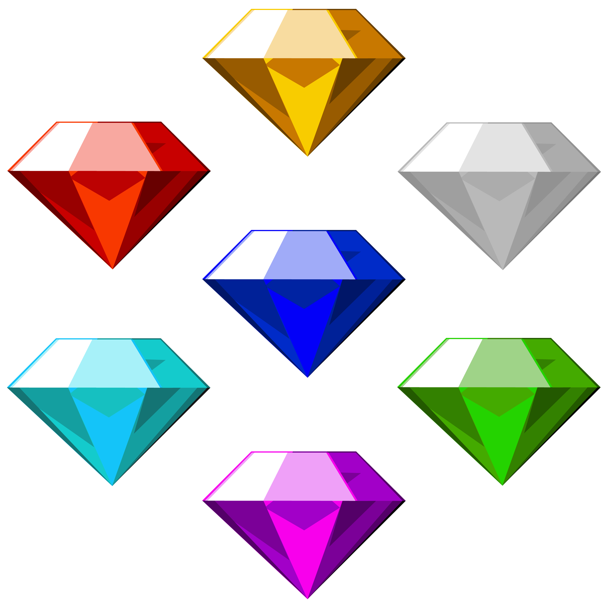
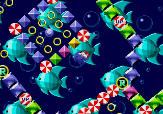

|
Rings (Anéis) São os itens mais comuns nos jogos do Sonic. Esses anéis contêm uma energia chamada Chaos. Eles têm o poder de defender os personagens. Se um personagem for atacado, ele não receberá dano, em compensação, perderá 20 anéis. Se um personagem não tiver nenhum anel ele morrerá, perdendo assim o jogo. Eles também têm o poder de desbloquear a super forma dos personagens junto com as Esmeraldas do Caos. As Esmeraldas do Caos junto com 50 rings podem desbloquear a super forma de um personagem, assim como aconteceu com Sonic, Tails, Knuckles, Mecha Sonic, Shadow, Blaze e Silver. Nos primeiros jogos, eram perdidos todos os rings e, ainda por cima, não era possível recuperar todos os anéis perdidos. Atualmente, são perdidos apenas 25 anéis e é possível recuperá-los. Nos jogos atuais, os anéis também servem para Sonic utilizar a habilidade de "Boost" e melhora um pouco o salto e outras habilidades. Algumas causas de morte não podem ser prevenidas utilizando os anéis como ser esmagado, cair de um abismo e se afogar. Chaos Emeralds (Esmeraldas do Caos) As sete Esmeraldas do Caos. As Esmeraldas do Caos, na história do jogo, são antigos artefatos mágicos com um poder surreal. O poder quando bem manipulado pode lhe dar habilidades inimagináveis, além de servir de fonte de energia para qualquer ser ou máquina. Elas existem desde o primeiro jogo do Sonic. Diferente dos anéis, elas contêm grande valor de Energia Chaos. São no total 7 Esmeraldas, que são neutralizadas pela Esmeralda Mestre, uma Esmeralda verde e grande e que tem um poder infinito. Elas podem transformar-se nas Super Esmeraldas e dar mais poder a quem as possui. Nos primeiros jogos, as Esmeraldas eram colecionadas em fases especiais. Nos jogos atualmente, elas são conseguidas ao passar da história. Elas contêm um valor positivo e negativo. Quando o Sonic usa o poder positivo, ele transforma-se no Super Sonic. Quando usa o poder negativo, ele transforma-se no Dark Sonic. Special Stages (Fases Especiais) Normalmente, Fases Especiais (ou Special Stages) aparecem no jogo como forma de ganhar as Esmeraldas do Caos.[30] Essas fases normalmente ocorrem em ambientes surrealistas e apresentam mecanismos de jogabilidade alternativos comparado com a plataforma padrão dos principais níveis. O primeiro jogo consiste em um labirinto giratório com imagens de peixes e pássaros no fundo, onde o jogador tem que pular para chegar até a esmeralda sem cair nos Goals.[31] Nos demais jogos as fases consistem em coletar um certo número de items até ganhar a esmeraldas. Em Sonic the Hedgehog 2 o jogador percorre um túnel em 3D coletando anéis e tendo cuidado para não ser acertado pelas bombas no caminho. Em Sonic 3 & Knuckles o jogador percorre um cenário em 3D atravessando orbes azuis as fazendo mudar de cor para vermelho, embora com cuidado para não encostar nas orbes vermelhas. Em Sonic CD o jogador pode correr livremente por um cenário cheio de água (que diminuem o tempo) destruindo OVNIs.  |
|
|
INICIO SOBRE O PERSONAGEM HISTÓRIA JOGABILIDADE JOGOS CARACTERÍSTICA COMUNS FEEDBACK |